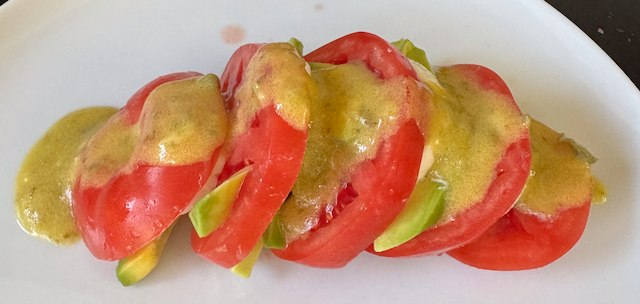

Tomato, Avocado and Mozzarella Salad

Serves: 2 as a main, 4 as a side
Cook Time: 30 min
From Hello! magazine circa 2000. Serve with crusty bread. Add bacon if you want to make it more substantial.
Ingredients
- ½ lemon, juice
- 2 avocados, peeled, quartered and sliced
- 4 beef tomatoes, sliced and salted
- 225g mozzarella, sliced
- Dressing
- 5 tbsp olive oil
- 1 tbsp white wine vinegar
- 1 tbsp dijon mustard (yes tablespoon)
- 2 tsp capers, chopped
- 1 garlic clove, minced
- salt and pepper
Method
Salad. Juice the lemon first. When you cut the avocados, quickly place the slices in the lemon juice, to stop them from browning.
Dressing. Whisk together the dressing ingredients.
Assemble. Layer the salad tomato/avocado/mozzarella, repeated, topped with tomato. Drizzle over the dressing.